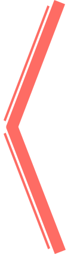
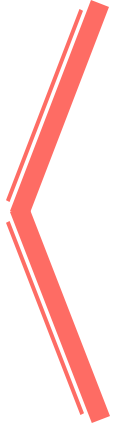

Никита Старков
30 лет, предприниматель со своей первой картиной маслом "Закат на море" http://vk.com/id10286729
Анастасия Скубиева
22 года со своей первой картиной маслом "Цветы"
Алина Абрамова
56 лет, учитель физкультуры со своей второй картиной маслом
Олег
12 лет, с педагогом Павлом и со своей первой картиной маслом "Прованс"
Екатерина Хлынина
31 год, бухгалтер с художником Юрием и своей 3-й картиной маслом http://vk.com/id1935863
Екатерина Сергеева
25 лет, музыкант, композитор со своей первой картиной маслом http://vk.com/straycat
Наталья Житенева
27 лет, менеджер по продажам, со своей картиной маслом форматом 50х70см http://vk.com/id14970750
Елена Прокопович
36 лет, учитель английского, со своей первой картиной маслом http://vk.com/eprokopovich79
Семенова Нина Ивановна
85 лет со своей первом картиной маслом форматом 20х30 см

Сергей Кодесников
35 лет, программист со своей первой картиной маслом 40х60см https://vk.com/kodesnikov
Злата Вишневская
студентка, 21 год со своей второй картиной маслом, формат 40х50 см https://vk.com/id94817897
Екатерина Веселева
27 лет, управляющая интернет-магазином одежды со своей 3 картиной маслом, холст 40х50см http://vk.com/izolda161191

 
